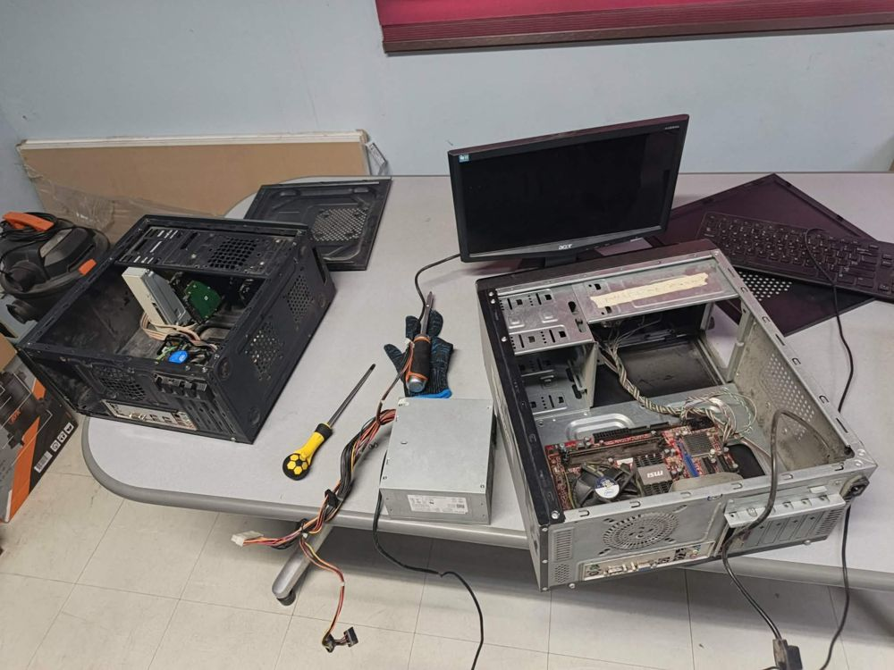
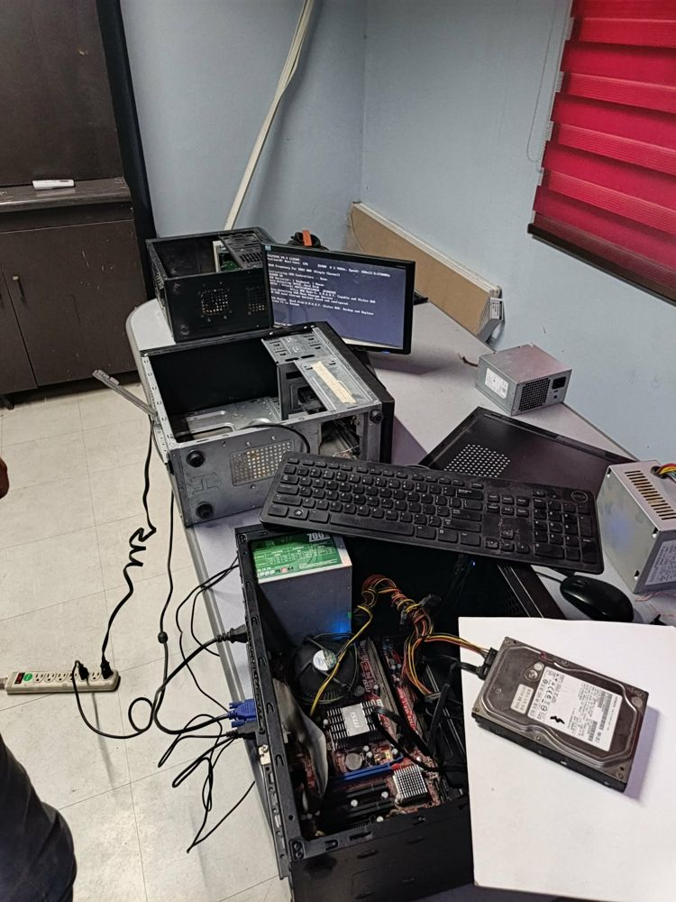
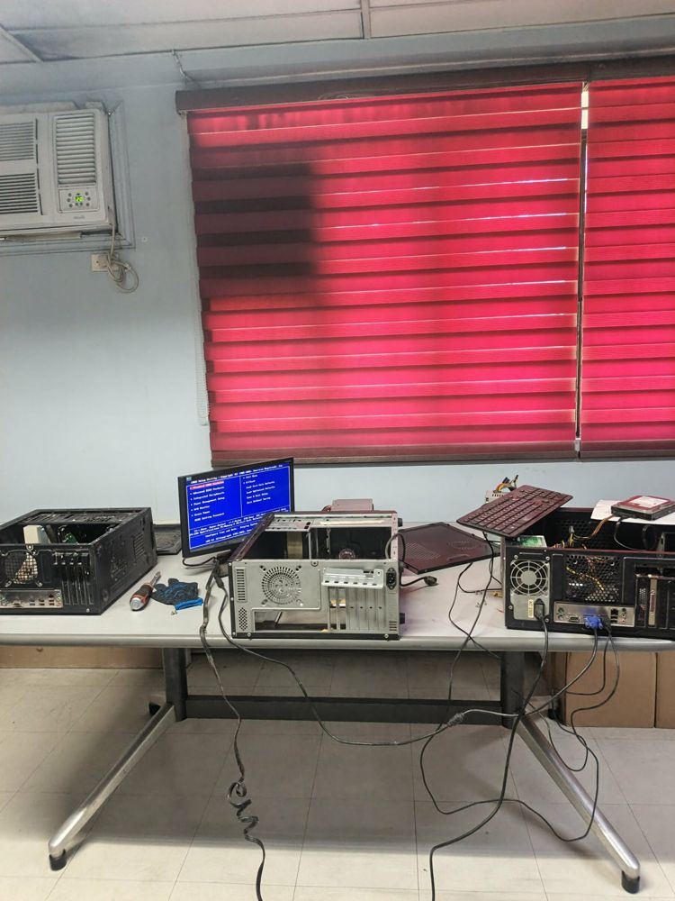

Overview
A hands-on hardware project: assembling and testing a desktop computer, from opened cases and loose parts to a working Windows desktop.
Completed together with Edward S. Vidal. The documentation, screenshots and results below come from our shared project work.
Status: Photos and video demonstration added.
A hands-on hardware project: assembling and testing a desktop computer, from opened cases and loose parts to a working Windows desktop.
I assembled the desktop computer. I put the parts together, connected the monitor and keyboard, and tested it until it reached the BIOS setup screen and a Windows desktop.
The startup screen reported a warning for the Hitachi hard disk: S.M.A.R.T. Status BAD, Backup and Replace. This means the drive may be failing, so it should be backed up and replaced.
| Part | What can be seen | Details |
|---|---|---|
| Processor | Shown on the startup screen | Intel Pentium Dual-Core E5400, 2.70 GHz |
| Memory | Shown on the startup screen | DDR2 800, single channel |
| Motherboard | Visible in the photos | MSI |
| Hard disk | Hitachi disk named on the startup screen; other drives visible | Hitachi |
| Power supply | Several units visible in the photos | Several units |
| Case, monitor, keyboard | Visible in the photos | Acer monitor, Dell keyboard |
The photos show the computer reaching the startup screen with the processor, memory and hard disk detected, opening the BIOS setup menu, and showing a Windows desktop.
Warning on the startup screen: the message for the Hitachi hard disk says S.M.A.R.T. Status BAD, Backup and Replace. This means the drive reported that it may be failing.
About 6 minutes. Watch it on YouTube.




